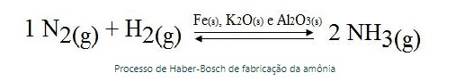
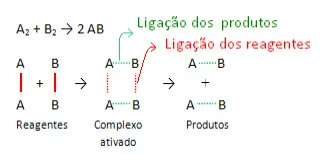
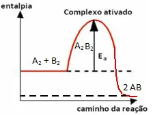

Um catalisador é uma substância capaz de acelerar uma reação sem sofrer alteração, isto é, não é consumido durante a reação.
Um catalisador é uma substância capaz de acelerar a velocidade em que se processam determinadas reações químicas sem sofrer alterações, ou seja, não é consumido, mas regenera-se completamente no final. A água oxigenada (solução aquosa de peróxido de hidrogênio — H2O2), por exemplo, sofre uma decomposição bem lenta em condições ambientes, formando o gás oxigênio e a água, conforme a equação química a seguir: 2 H2O2 → 2 H2O + 1 O2 Essa reação é acelerada quando a água oxigenada é colocada sobre algum machucado. Isso pode ser visto por meio das bolhas que se formam pela formação intensa do gás oxigênio. O que aumentou a velocidade dessa reação? Um catalisador biológico, também chamado de biocatalisador, que é uma enzima presente no sangue denominada catalase. A reação que ocorre na presença de um catalisador é chamada de catálise. Nas equações químicas que representam essas reações, o catalisador é indicado através de uma seta, tendo em vista que ele não participa nem como reagente nem como produto. O processo de fabricação da amônia, que é chamado de Haber-Bosch, usa o ferro como catalisador. Além dele, também são usados o óxido de potássio e o óxido de alumínio que ativam a ação catalítica do ferro. Assim, observe como essas substâncias aparecem na equação a seguir e como elas realmente não participam da reação, apenas aceleram o processo:  Isso nos mostra que o uso de catalisadores é muito importante principalmente para as indústrias, pois viabiliza processos que demorariam muito para serem realizados. É importante entender que as substâncias catalisadoras não aumentam a quantidade de produto da reação, apenas aceleram o processo. Mas surge a pergunta: como os catalisadores aumentam a velocidade das reações? Eles conseguem isso porque trocam o mecanismo pelo qual a reação se processa, ou seja, eles formam um “caminho” alternativo para que a reação ocorra com uma energia de ativação menor. Digamos, por exemplo, que a seguinte reação genérica ocorra sem o uso de catalisadores: Não pare agora... Tem mais depois da publicidade ;) A2 + B2 → 2 AB Assim como ocorre com toda reação, essa também será realizada somente se os reagentes atingirem a energia de ativação, que é a energia mínima para que se forme o complexo ativado, uma estrutura intermediária e instável entre os reagentes e os produtos.  A seguir há um gráfico que ilustra esse processo. Veja como a energia de ativação tem um valor elevado na formação do complexo ativado e como ela funciona como uma espécie de obstáculo para que a reação ocorra:  Agora se usarmos um catalisador “C” para a realização dessa reação genérica, ele combinar-se-á com um dos reagentes, formando o composto intermediário que, por sua vez, transformar-se-á no produto esperado, e o catalisador será regenerado. Isso acontece, por exemplo, da seguinte forma: A2 + B2 → 2 AB1ª etapa: A2 + C → A2C (composto intermediário)
2ª etapa: A2C + B2 → 2 AB + C
(produto) (catalisador)